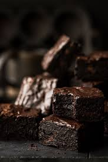

Brownies

Ingredients
- 1 cup dark chocolate chips (or chopped dark chocolate)
- 1/2 cup unsalted butter
- 1 cup granulated sugar
- 2 large eggs
- 1 teaspoon vanilla extract
- 1/2 cup all-purpose flour
- 1/4 teaspoon salt
- 1/4 teaspoon baking powder
Steps
- Preheat the oven to 350°F (175°C) and grease a 9x9-inch baking pan or line it with parchment paper.
- In a microwave-safe bowl, combine dark chocolate chips and butter. Heat in the microwave in 30-second intervals, stirring in between, until melted and smooth.
- Stir in the granulated sugar until well combined.
- Add the eggs one at a time, mixing well after each addition, then stir in the vanilla extract.
- In a separate bowl, whisk together the flour, salt, and baking powder. Gradually add the dry ingredients to the chocolate mixture, stirring until just combined.
- Pour the batter into the prepared baking pan and spread it evenly.
- Bake for 20-25 minutes, or until a toothpick inserted into the center comes out with a few moist crumbs (not wet batter).
- Allow the brownies to cool in the pan for at least 10 minutes before slicing into squares. Enjoy!